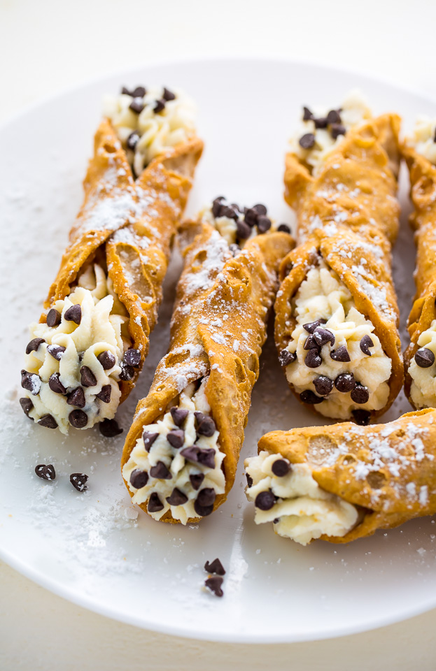

Beautiful Cannolis!

These cannoli taste just like the best ones I’ve gotten at Italian bakeries! They have the perfect combination of flavors and textures.
The cannoli shells are perfectly tender and flaky, like a flake away in your mouth kind of texture.
The ricotta cannoli filling is rich and deliciously sweetened, and those little flecks of mini dark chocolate chips swirled throughout just amp up that already immensely satisfying flavor.
But if you still want to boost flavor you can add extra cinnamon, orange zest, maraschino cherries, or vanilla to the filling. And optionally finish by dipping ends in crunchy pistachios.
Don’t be scared away by the number of steps in this recipe, the first time will likely go slow but once you get the hang of it these cannoli will become a breeze to prepare. And they may even become a new holiday or party tradition!
These delectable Italian delicacies are truly worth learning to make!
Ingredients Needed to make Cannoli Shells
- Unbleached all-purpose flour
- Granulated sugar
- Salt
- Unsalted butter
- Marsala wine
- Egg and egg white
- Vegetable oil?
Ingredients Needed to Make Cannoli Filling
- Whole milk ricotta
- Powdered sugar
- Mini chocolate chips
- Cinnamon
- Pistachios (optional)
How to Make Cannoli Shells
- >Mix dry ingredients in a food processor.
- Pulse in butter.
- Add marsala wine and egg and pulse to bring together.
- Transfer to oiled bowl, cover and rest dough.
- Heat oil in pot.
- Roll dough out very thin on a floured surface.
- Cut into rounds or ovals (about 4-inches each).
- Wrap rounds around greased cannoli forms, brush top or bottom edge with egg white to seal shut.
- Fry in preheated oil until golden brown and crisp, about 1 – 2 minutes.
- Remove cannoli shells and drain on paper towels.
- Remove shells from forms, let forms cool and repeat process.
- Make cannoli filling.
- Let shells cool completely then fill with cannoli filling.
Can I Make the Dough without a Food Processor?
Yes, mixture can also be made by hand. To do so:
- Mix dry ingredients in a mixing bowl.
- butter into dough using a pastry cutter or fork.
- Mix in egg and marsala wine with a wooden spoon. Add more wine to bring together.
- Knead briefly to a shaggy ball. Proceed with resting and frying as directed.
How to Make Cannoli Filling
The filling is the easiest part of the recipe. All you need to do is:
- Strain ricotta.
- Add ricotta, sugar, chocolate chips and cinnamon to a mixing bowl.
- Fold and stir mixture to blend.
How to Strain Ricotta
- Shortcut tip: I like to use a brand of ricotta that’s not runny (such as Galbani), then I spread across paper towels, cover with more paper towels and press out some of the extra moisture and roll up, then unroll and drop into bowl.
- For wetter ricotta here is a link that shows two straining methods.
How to Store Cannoli and How Long do They Keep?
Cannoli shells should be stored in an airtight container at room temperature, they should keep well for 1 week. The filling should be stored in the refrigerator separately from the shells, it should keep well for about 5 days.
How to Fix Cannoli Shells that Aren’t Crisp?
If you follow this recipe precisely you shouldn’t need this step at all, but just in case this will solve the issue. If you do happen to end with not so crispy cannoli shells you can place them on a wire rack set over a cookie sheet and bake them at 250 degrees in the oven until crisp, about 5 – 10 minutes. Don’t attempt to do this with the cream filled cannoli shells though of course.
Possible Variations and Substitutions
Regionally there are several authentic variations of cannoli so you can switch things up as you like. You can:
- Use shortening or lard in place of butter in shells. Fry in vegetable oil, shortening, lard, peanut oil or refined coconut oil.
- Go with granulated sugar in place of powdered sugar (but stir enough to dissolve any grittiness).
- Add 2 tsp unsweetened cocoa powder or 1/4 tsp cinnamon to the cannoli shell recipe for a light background flavor.
- Use white wine for marsala wine. For a no wine option use grape juice or water and vinegar as noted in recipe.
- Add orange zest, chopped chocolate or mini chocolate chips, chopped maraschino cherries, cinnamon, vanilla extract or vanilla bean to filling.
- Dip each end of of finished cannoli shells in melted chocolate. Let set in fridge before filling.
- After filling cannoli, dip each end in unsalted chopped pistachios.
- Add mascarpone to the filling. Use 8 oz in place of 8 oz ricotta, smooth it outSugarshells and just use the filling recipe here.
- Dust with powdered sugar to your hearts content before serving.
Tips for the Best Cannoli
- Allow time for dough (gluten in it) to relax, it makes it easier to roll and work with.
- Roll dough super thin or shells won’t end up crispy.
- Bring oil to proper temperature using a deep fry or candy thermometer (otherwise shells can end up soft or burnt), maintain the temperature.
- Strain moisture from ricotta! Otherwise it will be soupy once the sugar is added.
- Serve cannoli within 1 hour of filling for crispiest results. The moisture of the ricotta will seep into the shells after a while and soften them.
Cannoli
Ingredients
Shells
- 1 3/4 cups (250g) unbleached all-purpose flour (scoop and level to measure)
- 1 1/2 Tbsp (18g) granulated sugar
- 1/4 tsp salt
- 3 Tbsp (43g) unsalted butter, diced into small pieces
- 1/3 cup marsala wine*, then more as needed
- 1 large egg
- 1 egg white
- Vegetable oil or shortening, for frying (about 8 cups)
Filling
- 32 oz. whole milk ricotta, strained**
- 1 1/2 cups (180g) powdered sugar***
- 3/4 cup (126g) mini chocolate chips
- 1/4 tsp ground cinnamon****
- Chopped unsalted pistachios, optional
Instructions
For the Cannoli Shells
- To a food processor add flour, sugar and salt. Pulse in short bursts about 10 times. Add butter and pulse in short bursts just until there aren't clumps of butter.
- Add in marsala wine and whole egg. Pulse to mix well, while adding additional wine to bring dough together in a soft shaggy mass (you shouldn't need more than a few Tbsp extra wine).
- Shape into a round, transfer to an oiled bowl. Cover and let rest at room temperature at least 30 minutes and up to 2 hours.
- Heat a large pot with 1 1/2-inches vegetable oil to 345 - 355 degrees. Working with half the dough at a time (and keeping other half covered in the bowl) roll dough out very thinly onto a well floured surface (nearly 1/16-inch).
- Using a 3 1/2 to 4-inch cookie cutter, cut dough into rounds. Spray cannoli forms with cooking spray then wrap individual dough circles around each cannoli form, while brushing about 3/4-inch of one end lightly with egg white (use a pastry brush or just your fingertip). Press edge to to opposite side.
- Using metal tongs, carefully immerse shell in preheated oil and fry until golden brown and crisp, about 1 - 2 minutes (be sure to watch oil temp so oil doesn't get too hot and burn shells. You can fry up to 6 at a time).
- Remove from oil using metal tongs to grasp the cannoli shell (let oil from inside forms drain back into pot), transfer to paper towels to drain. Use metal tongs to hold mold (or folded layers of paper towels) and wrap a paper towel around shell to carefully slide off of form.
- Let forms cool and repeat process with remaining dough circles. You can shake excess flour from scraps, press back together, cover in bowl and let relax at least 10 minutes then reuse.
- Allow to cool on a wire rack then fill with cannoli filling and decorate as desired (with melted chocolate on edges, chopped pistachios, mini chocolate chips or dust tops with powdered sugar).
For the Cannoli Filling
- In a mixing bowl fold and stir together strained ricotta, powdered sugar, chocolate chips, and cinnamon. Transfer into a piping bag fitted with a large round tip. Pipe filling into cooled cannoli shells.
Notes
- *Dry or sweet marsala wine can be used. Marsala wine can be replaced with 1/4 cup grape juice or water and 1 Tbsp vinegar, then add more juice as needed.
- **I like to use a brand of ricotta that's not runny (such as Galbani), then I spread across paper towels, cover with more paper towels and press out some of the extra moisture and roll up, then unroll and drop into bowl. For wetter ricotta here is a link that shows two straining methods.
- ***1 cup granulated sugar can be substituted for powdered sugar just be sure to stir enough to dissolve granulated sugar.
- ****Cinnamon can be omitted or doubled. Different regions of Italy make cannoli differently so go with what you like. Orange zest, chopped maraschino cherries, or vanilla extract/vanilla bean can also be added to the filling.
Credit